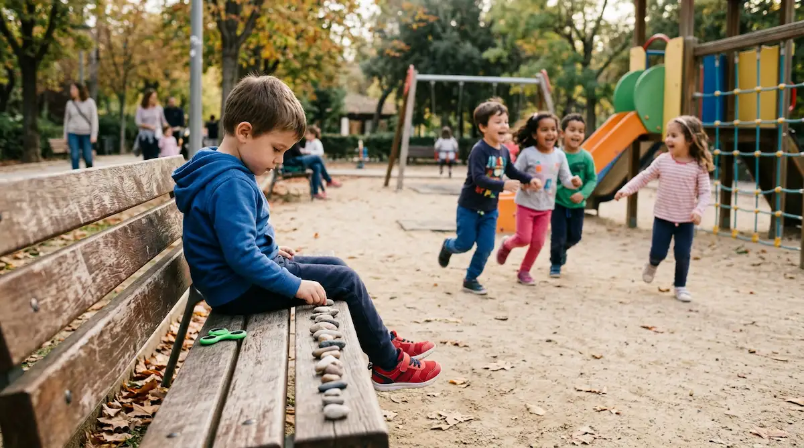

Respetar sus tiempos de vínculo: otra forma de conectar
La socialización es una de las áreas donde más expectativas sociales se proyectan en la infancia. A menudo se interpreta de forma errónea que un niño o niña en el espectro autista no desea relacionarse o carece de empatía. La realidad es muy diferente: el vínculo y el afecto existen con una intensidad enorme, pero se expresan a través de códigos propios que no siempre coinciden con los convencionalismos sociales tradicionales.
Comprender su manera única de relacionarse con el mundo
Para un niño con TEA, mantener contacto visual prolongado puede resultar una fuente de abrumación y fatiga mental intensa. Del mismo modo, el juego compartido puede estructurarse desde la observación, compartiendo espacio sin necesidad de una interacción verbal constante. Entender que su forma de vincularse es legítima y profunda nos libera de la presión de querer cambiar su naturaleza social.
"Conectar no significa obligar al niño a actuar como los demás, sino aprender a sintonizar con su propio idioma emocional y afectivo."
Apoyar la socialización desde el respeto y la empatía
Facilitar las relaciones con su entorno requiere un enfoque paciente que evite la saturación y potencie la seguridad:
1. Respetar los espacios de juego en paralelo: Permitir que el menor comparta juegos junto a otros niños sin forzar una participación directa constante reduce la ansiedad social y respeta sus propios ritmos.
2. Validar sus intereses genuinos: Compartir tiempo a través de las temáticas o pasiones que le fascinan abre una pasarela directa de comunicación sincera y complicidad mutua.
Creciendo seguros en sus propias relaciones
Cuando dejamos de medir su bienestar en función de cuántos amigos tiene y empezamos a valorar la calidad y autenticidad de sus conexiones, todo cambia. Con un entorno que respeta sus tiempos de descanso social, el niño cultiva relaciones seguras y enriquecedoras, sintiendo que su forma de estar en el mundo es plenamente aceptada.
➔ Volver al índice de Autismo (TEA)